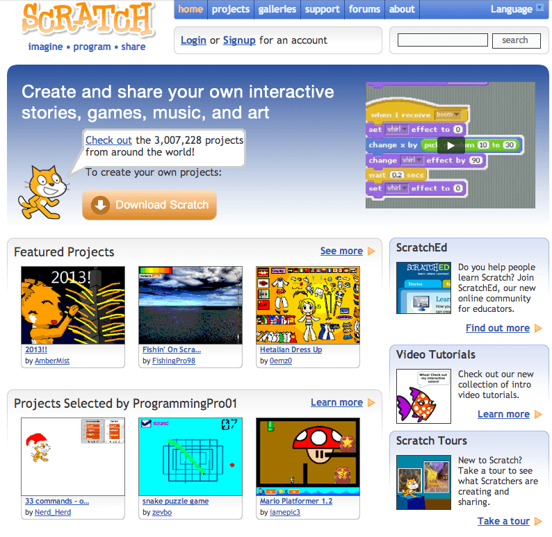
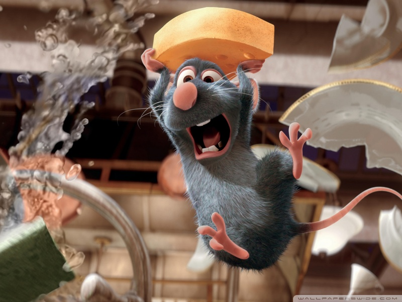
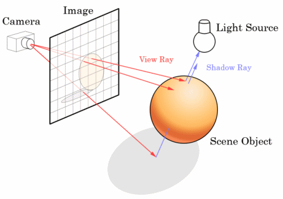
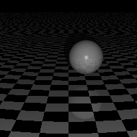
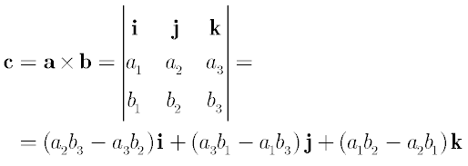
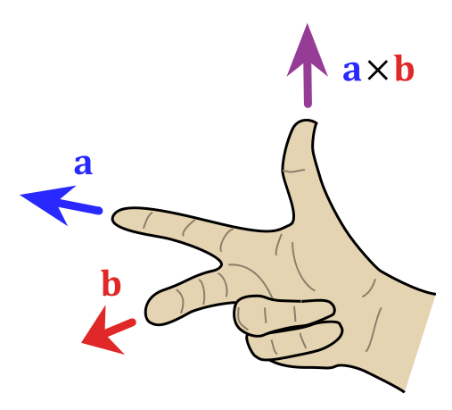
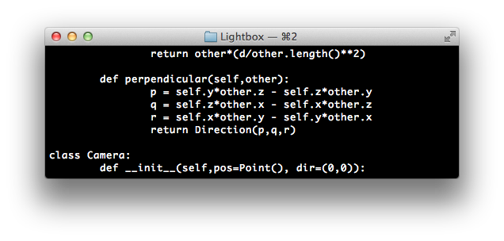

They do it with Mirrors
Monday, June 1, 2015 · 4 min read
This is an idealized transcript of a talk I gave a couple weeks ago at our school’s “Engineering Night”, an event where students are invited to speak and get others excited about engineering. I’m putting this up here because it makes a great blog post, and because I want to be able to come back and find these ideas in the future.
When I was five, my parents took me to go see Finding Nemo. It’s an amazing movie, except when you’re five, all you really process are terrifying scenes like this one.
So we didn’t really go out for many movies after that.
The next one I remember seeing was in the fifth grade, actually, with my best friend. We went to see Cloudy With a Chance of Meatballs.
I loved it. Not just the story—the pictures. I loved how everything was so realistic. I mean, I was told that these movies are computer-generated, but I felt that I could reach out and touch those hair, or poke the huge mound of Jell-O.
So when I got back, I wondered “how do you do it?” and like any fifth grader, I came up with an explanation. I’d been watching NOVA, so I had heard of these things called “photons” which are like tiny golf balls. And so my explanation was that computers shoot these golf balls into a 3D model just like how you can shoot bullets in Halo and Counter-Strike. And by knowing how these golf balls bounced around, you could figure out what things looked like.
Yeah, it’s silly. But when I was in fifth grade, I also thought I could stick out my hand under the sun and catch some photons like rain, and if I collected enough I could drink them like any other liquid. I tried this, and it didn’t work, and when I asked my teachers they told me I was watching too much NOVA.
And I don’t mind. I had an idea, I tested it, it didn’t work, and I wondered why. As far as I’m concerned, that’s as close as I’ve ever gotten to the “scientific method” that they teach you at school.
In any case, I ended up getting really lucky. Out science teacher used to order these Scholastic magazines. They were mostly advertisements for books, but some of them had short articles about new science.
That week’s magazine actually had an article about Cloudy With a Chance of Meatballs. And it explained… nothing, actually. It was a thinly veiled advertisement. But it did have a link to a website called Scratch.
Scratch might be one of the best things to ever happen to me. It’s a website that’s sort of analogous to YouTube, except instead of videos, you can upload small programming projects, like Flash games. Scratch comes with its own really simple programming language, and some of you in the audience might have already used it if you took a CS class here.

I loved Scratch. Over then next two years, I made games, stories, and—most importantly—friends I still talk to today.
I, of course, forgot this whole 3D movie thing completely.
…until one day, Ratatouille was on, and I remembered again.

Look at the water splashing next to Remy’s head. You can see the wall through it. But it distorts the wall a bit. It’s called “refraction”.
If you asked me to draw this, I would have no idea how the water distorted the wall. But when I look at this, it looks right. Somehow, the computers know how this all works.
At this point, I was old enough to find things out for myself. So I Googled it.
It turns out that to make these movies, computers fire these tiny little balls, like golf balls, into a 3D model. By seeing how the balls bounce, they can figure out how the model looks.
It’s called “raytracing”, and it’s a serious academic subject, not a silly idea a fifth grader came up with in the shower.

So of course I wanted to know more. The first thing I learned was that when they say “computer-generated movie”, what they mean is “supercomputer-generated movie”. This is the supercomputer that rendered Cars. Cars has a running time just short of two hours and was rendered at 25 frames per second.
Guess how long it took to render a frame?
Seven hours.
As technology improves, it takes us longer to render movies because we’re getting so focused on detail. We’re simulating individual particles in an ocean, and individual strands of hair.
So I was entranced. I wanted to know more. And at this point, the only way to learn more was to do it myself. So I did.

I’m so proud of this picture. It represents so much to me.
Of course, my story didn’t end there. It ended in math class this year, battling this monster.

This is the “cross product”. If you haven’t touched it yet, you’re lucky. It’s the determinant of a matrix, except, some of its entries aren’t even numbers, they’re vectors. And if you’re really lucky, you get two possible answers.
And to guess which one is right, you need to make gang signs. This is the “right-hand rule”, and basically, everyone looks really funny doing this when taking a test.

Something about this bothered me. And when I got home, I finally realized it.
These lines of code are—unaltered—from my raytracer.

Looks familiar? It’s the cross product!
I wrote those lines of code in seventh grade. I had no idea what a vector was. I don’t know how I got those equations—I just remember doing lots of algebra on paper and somehow getting them.
And suddenly it all made sense to me. All this math we’re learning? It’s useful. You know why the cross product has two answers? Well, the cross product essentially says “if the ground is sloped this way, which direction points away from the ground?”. You use it to say “which way should a photon bounce when it’s bouncing away from a surface”.
Well, there are two directions away from the ground! You can go up into the sky or you can drill down into the Earth. And so the two answers just point in opposite directions. It makes sense!
What I’m trying to say is, you don’t need to take 10th grade math to make something cool. Every single one of you in the audience here is completely capable of creating something incredible. So what are you waiting for? Taking that Stanford course on fluid dynamics someday? You don’t need it.
Every single one of you has so much knowledge right in front of you: the Internet, libraries, and brilliant teachers everywhere. So stop waiting until you’re “ready”, and go build something.